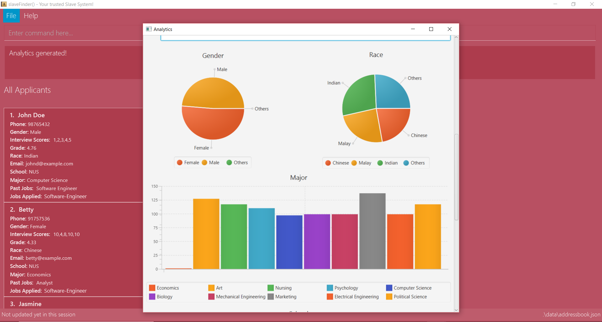

Overview
slaveFinder() is a resume management application that helps recruiters manage most of the hiring process. It allows recruiters to easily look for quality job applicants through convenient filtering of resumes' various fields, and sort these applicants into different parts of the selection process. Other features include automated scheduling of interviews based on recruiter’s availability and analytics of job applicants.
Summary of contributions
-
Major enhancement 1: added Analytics feature end-to-end
-
What it does:
-
Consolidates and breaksdown the various fields data of applicants, such as gender breakdown, number of applicants in each school, number of applicants in each major and average grade.
-
Analytics can be done on specific lists in the selection process, such as only on applicants that were interviewed or selected for the job.
analytics applicant,analytics kiv,analytics interview,analytics shortlist,analytics
-
-
Justification:
-
Recruiters often want to know the quality of applicants that apply to their company, and use this data to improve their hiring process or recruit marketing strategies.
-
Furthermore, many companies are concerned about diviersity in their team. Such analytics can inform them if they are getting (or selecting) a sufficiently diversed pool of applicants.
-
-
Highlights: In addition to processing the various fields data in corresponding lists, analytics data is presented in a visually intuitive manner consisting of different charts to suit the nature of the person field.

-
-
Major enhancement 2: restructured the original AB4 UI code to suit the context of slaveFinder(), and provide UI component for various commands added by other team members.
-
What it does:
-
Consist of two scenes: First scene shows 2 panels consisting of a list of all applicants and a list of all job openings. Second scene shows 4 panels, each representing a specific part in the hiring process for a specific job opening: "Applicants, KIV, Interviewed, Shortlist".
-
Filtering of applicants through field data is also shown visually on software, where filtered keywords are "stored" (and removed when needed) above the corresponding lists.
-
-
Justification: Being able to filter applicants and sort them according to the selection process is the core value add of our software, and hence essential to be visually represented and for user to interact with each list accordingly.
-
Highlights: Enable UI for the following commands:
-
DisplayJob: Switch UI scene to show 4 panels for specific job -
list: Switch UI scene to show all applicants and all job openings -
filter: Filter keywords stored above corresponding lists -
deleteFilter&clearFilter: remove filter keywords stored above corresponding lists -
movePerson,addPerson: allows Person to be moved and displayed at various list on theapplicantsPanel,kivPanel,interviewPanel,shortListPanel -
createJob: allows new job to be added as aJobCardon theJobsPanel -
analytics: new window that displays analytics data on different charts.
-
-
-
Minor enhancement: Added Person Fields: Gender, Race, NRIC, Grade, InterviewScores, JobApply, as required by resumes of job applicants (#85)
-
Minor enhancement: Make person field
NRICthe unique identifier ofPersonand createUniqueNRICMapto allow convenient obtaining ofPersonvia NRIC. (#85) -
Minor enhancement: Enhance
listcommand to list both jobs and persons. (#200) -
Code contributed: Functional and Tests
-
Other contributions:
-
Enhancements to existing features:
-
Documentation:
-
Community:
-
Contributions to the User Guide
Given below are sections I contributed to the User Guide. They showcase my ability to write documentation targeting end-users. |
Display Analytics : analytics
Display the analytics of applicants for desired job list (applicant, kiv, interview, shortlist) or all applicants.
Format : analytics LISTNAME or analytics (for all applicants)
Examples:
-
analytics applicant -
analytics kiv -
analytics
Introduction
slaveFinder() is a resume management application that helps recruiters manage most of the hiring process.
The application is optimized for those who prefer to work with a Command Line Interface (CLI) while still having the benefits of a Graphical User Interface (GUI). If you can type fast, slaveFinder() can get your resume management tasks done faster than traditional GUI apps.
Interested? Jump to the [Quick Start] to get started or [Command Summary] for the list of commands. Enjoy!
-
Some example commands you can try:
-
add n/John p/91757536 nric/S8761230Q e/john@example.com a/123 Disneyland g/Male r/Malay m/Psychology s/NUS gr/4.33 j/Manager: adds a person namedJohnto all applicants database. -
createJob jn/Manager: creates new job openingManager. -
addAll a jn/Manager: adds all applicants in the database to theapplicantslist of jobManager. -
displayJob jn/Manager: displays the selection process for job openingManager -
list: Goes back to the list of all applicants and job openings.
-
Adding a person: add
Adds a person to slaveFinder()
Format: add n/NAME p/PHONE_NUMBER nric/NRIC e/EMAIL a/ADDRESS g/GENDER r/RACE m/MAJOR s/SCHOOL gr/GRADE j/JOBS_APPLY
Examples:
-
add n/John p/91757536 nric/S8761230Q e/john@example.com a/123 Disneyland g/Male r/Malay m/Psychology s/NUS gr/4.33 j/Manager -
add n/Betty p/123 nric/S4444455Y e/betty@bet.com a/321 USS g/Female r/Others m/Life Science s/NTU gr/0.44 j/Helper is/1,2,1,10,5 kpl/Java pj/Chief-Executive-Officer
Undoing previous command : undo
Restores slaveFinder() to the state before the previous undoable command was executed.
Format: undo
|
Undoable commands: those commands that modify slaveFinder()'s content ( |
Examples:
-
edit 1 n/Johnny
list
undo(reverses theedit 1 n/Johnnycommand)
Redoing the previously undone command : redo
Reverses the most recent undo command.
Format: redo
Examples:
-
edit 1 n/Johnny
undo(reverses theedit 1 n/Johnnycommand)
redo(reapplies theedit 1 n/Johnnycommand) -
edit 1 n/Johnny
redo
Theredocommand fails as there are noundocommands executed previously. -
edit 1 n/Johnny
clear
undo(reverses theclearcommand)
undo(reverses theedit 1 n/Johnnycommand)
redo(reapplies theedit 1 n/Johnnycommand)
redo(reapplies theclearcommand)
Editing a person : edit
Edits an existing person in slaveFinder().
Format: edit INDEX n/NAME p/PHONE_NUMBER nric/NRIC e/EMAIL a/ADDRESS g/GENDER r/RACE m/MAJOR s/SCHOOL gr/GRADE j/JOBS_APPLY
Examples:
-
edit 1 p/91234567 e/johndoe@example.com
Edits the phone number and email address of the 1st person to be91234567andjohndoe@example.comrespectively. -
edit 2 n/Betsy Crowerpj/Manager
Edits the name of the 2nd person to beBetsy Crowerand clears all existing past jobs and replace it with 'Manager".
Contributions to the Developer Guide
Given below are sections I contributed to the Developer Guide. They showcase my ability to write technical documentation and the technical depth of my contributions to the project. |
Analytics Feature
Current Implementation
The analytics is facilicated by the Analytics class. Analytics data are generated in real time depending on the specific job currently on display in the software by the user. Hence it will not be saved as states in the versionedAddressBook. It pulls required person list to generate data from Model, which consists of lists: displayedFilter, activeJobAllApplicants, activeJobKiv, activeJobInterview, activeJobShortist. An Analytics object will be created by Analytics class, storing the various required data generated, and pass it to Logic and UI for display.
Given below is the sequence diagram for analytics:

UI component
API : Ui.java
The UI consists of a MainWindow that is made up of parts e.g.CommandBox, ResultDisplay, PersonListPanel, StatusBarFooter, JobListPanel etc. All these, including the MainWindow, inherit from the abstract UiPart class.
The UI component uses JavaFx UI framework. The layout of these UI parts are defined in matching .fxml files that are in the src/main/resources/view folder. For example, the layout of the MainWindow is specified in MainWindow.fxml
The UI component,
-
Executes user commands using the
Logiccomponent. -
Listens for changes to
Modeldata so that the UI can be updated with the modified data.
Use case: View Analytics
MSS
-
User requests to display various lists of applicants from one of the jobs in all job openings lists
-
slaveFinder() shows lists of persons for specific job
-
User requests to view analytics for specific list of persons
-
slaveFinder() shows analytics results
Use case ends.